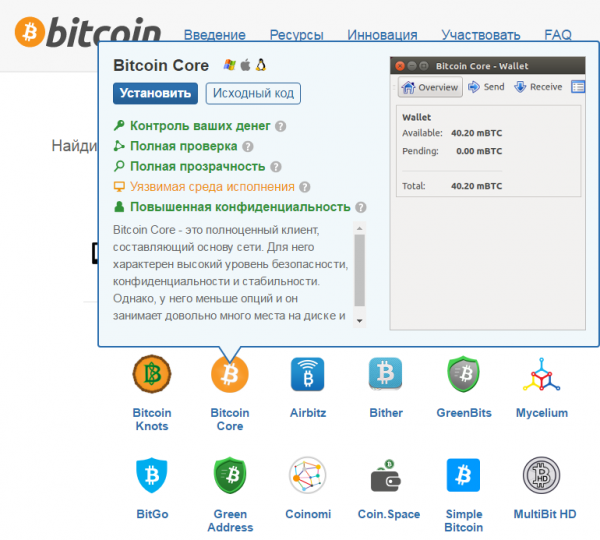
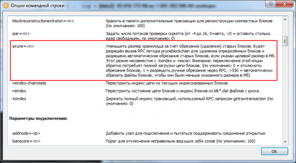
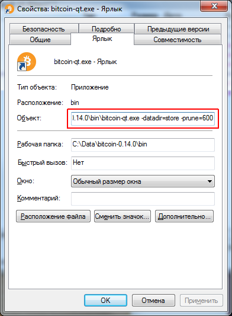

Недавно в комментариях к статье Bitcoin долгая синхронизация кошелька у меня спросили как быть, если жесткий диск маленького размера и весь блокчейн биткоина (а он уже больше 110Гб) не помещается?
Тут я вспомнил, что недавно вышла новая версия Bitcoin Core 0.14.0, которая содержит ряд улучшений.

Улучшена производительность IBD
Одним из главных нововведений релиза стало улучшение производительности начальной загрузки блоков (IBD). Узел, запущенный в первый раз, теперь может проверять все блоки гораздо быстрее. Подобное нововведение было необходимо из-за постоянно возрастающего размера блокчейна. Теперь пользователи могут не хранить весь блокчейн, который сейчас имеет размер более 110 Гб – достаточно иметь его урезанную версию с минимальным размером в 550 Мб.
В предыдущих версиях была предусмотрена обрезка блокчейна до 2 Гб и хранением блоков примерно за две недели. Теперь даже полные узлы могут только обрабатывать блоки, но не хранить их, записывая изменение балансов адресов в таблицу UTXO (неистраченных выходов). Несмотря на некоторые уступки в плане безопасности, такой механизм значительно ускоряет работу кошелька и снижает требования к аппаратным ресурсам.
Ускоренная проверка новых блоков
Это нововведение особенно порадует майнеров. Для многоядерных процессов был обновлен кэш подписей – тест, проведенный на системе с 16 ядрами показал 40% увеличение скорости обработки нового блока. Внедрение функции BIP152 Compact Blocks позволит передавать некоторые блоки еще до того, как они были полностью подтверждены, позволяя этим блокам быстрее чем раньше распространяться по сети peer-to-peer (P2P).
Код для обмена данными в сети P2P также был реорганизован, чтобы позволить нескольким действиям выполняться одновременно, а также увеличить пропускную способность, устраняя потенциальные задержки в обработке новых блоков. Помимо этого, неподтверждённые транзакции в памяти узла (mempool) теперь могут быть сохранены и восстановлены с диска при перезапуске Bitcoin Core.
Обновленный расчет комиссий
Кошелек Bitcoin Core теперь позволяет пользователям при желании отправлять транзакции при помощи функции replace-by-fee (RBF). Это значит, что пользователь может увеличить комиссию за транзакцию даже после того, как была отправлена в сеть более ранняя версия транзакции. Данная функция не включена по умолчанию. Разработчики надеются, что это нововведение побудит майнеров к более быстрой обработке новых версий транзакций.
Помимо перечисленных основных изменений, существуют также и другие нововведения — возможность включения и выключения сетевой активности, новый эффективный метод импорта множественных ключей или адресов watch only, а также новые предупреждения и сообщения, информирующие пользователей о правильном использовании продукта.
Разработчики Bitcoin Core позаботились о людях, которых хотят использовать оригинальный кошелек для биткоинов, однако при этом не имеют большого быстрого диска.
Уменьшаем необходимое место на диске для клиента Bitcoin
Для того чтобы использовать усеченный блокчейн нужно использовать опцию -prune=600
Указывать опцию prune необходимо при старте bitcoin-qt.exe, для этого можно создать ярлык для запуска кошелька и в строке Объект в свойствах ярлыка дописать опцию.
Выглядеть это будет примерно так
C:\Data\bitcoin-0.14.0\bin\bitcoin-qt.exe -datadir=store -prune=600
В данном случае я использую две опции при запуске Bitcoin wallet:
-datadir=store эта опция говорит кошельку, что блокчейн и wallet.dat находится в подкаталоге store каталога программы, вы можете не указывать эту опцию, и каталог с базой данных транзакций и файлом кошелька будет размещаться по-умолчанию в C:\Users\[имя вашего пользователя в Windows]\AppData\Roaming\Bitcoin
-prune=600 — Уменьшить размер хранилища за счёт обрезания (удаления) старых блоков. Будет разрешён вызов RPC метода pruneblockchain для удаления определённых блоков и разрешено автоматическое обрезание старых блоков, если указан целевой размер в Мб. Этот режим несовместим с -txindex и -rescan. Внимание: переключение этой опции обратно потребует полной загрузки цепи блоков. (по умолчанию: 0 = отключить обрезание блоков, 1 = разрешить ручное обрезание через RPC, >550 = автоматически обрезать файлы блоков, чтобы они были меньше указанного размера в Мб)
Смотрим help по командам, запускаем bitcoin-qt.exe /help. Получаем список опций командой строки Bitcoin Core
Из справки становится понятно, что можно указывать минимальное значение prune=551.

Создаем ярлык для запуска Bitcoin Core c опциями datadir и prune и их значениями:
